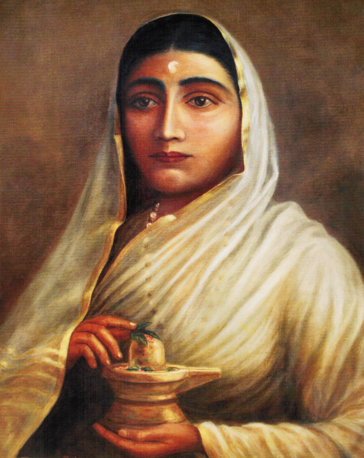
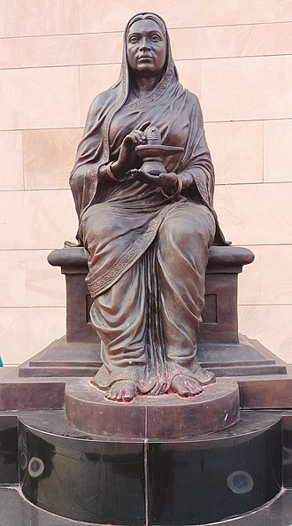
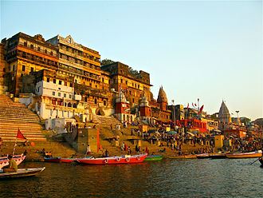
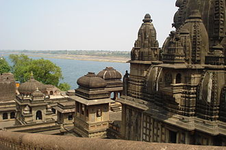
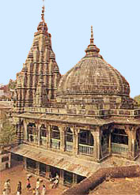

About Her:
She was born on May 31st, 1725 in Gram Chundi, Maratha Empire. She is regarded as one of the finest female rulers in Indian history. She spread the message of dharma and promoted industrialisation in the 18th century. After the death of her husband and father-in-law, she ruled Malwa in a wise and sagacious manner. On various occasions, she led the army herself from the front like a brave warrior, armed with bows and arrows on the elephant. It is said that during her reign, Malwa was never once attacked and remained an oasis of stability and peace.

Statue of Ahilya Bai Holkar
Ahilya Bai's Fort


Ahilya Bai's Temple
Ahilya Bai's Fort


Vishnupadh Temple